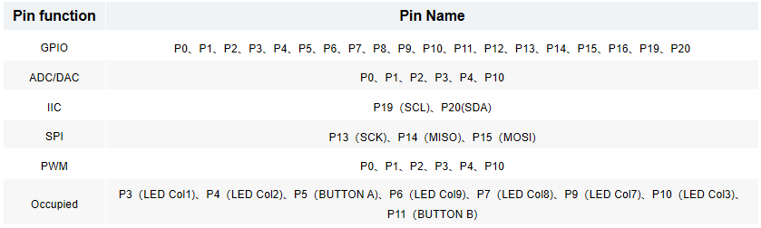

QA051 Microbit Shield V1.0
1.Introduction
Microbit-Shield-V1.0 is a miniature multifunctional expansion board designed for the micro:bit. The expansion board utilizes standard color-coded headers, making it easy for users to differentiate between different pins, suitable for electronic experiments, small robots, interactive devices, wearable projects, and more. Additionally, with an 18650 battery, users can execute corresponding programs offline.
The expansion board features a charging function for the 18650 battery; simply connect the expansion board’s micro-USB interface with a micro-USB cable to initiate charging when the power is connected. Furthermore, the expansion board is equipped with two charging indicator lights onboard; “CHRG” indicates that the battery is charging, while “STDBY” indicates that the battery is fully charged. Its comprehensive configuration greatly meets the needs of users in DIY creation.
2.Features
The expanded pins can be configured as:
3 PWM outputs
1 pair of UART serial transmission and reception
1 SPI bus (P13-P15)
1 I2C bus (P19-P20)
P3, P4, P6, P7, P9, P10 are used for controlling the LED screen on the controller board
P5, P11 are used for controlling the A and B buttons on the controller board
3.Specifications
Size：78.4mm*44mm
Weight：30.2g
4.Sample Code
After inserting the micro:bit controller board into the expansion board slot, three LED lights are connected to the P12, P13, and P14 pins of the expansion board, with the specific operational steps as follows:
①Open the Microsoft MakeCode website:Microsoft MakeCode for microbit (microbit.org) and access the software’s operating interface.
②Copy the extension URL for ACEBOTT:
https://github.com/ACEBOTTteam/Acebott
③Click on ‘Extensions’ in MakeCode.

④Paste the extension URL you just copied into the search bar, then press Enter.

⑤Once added, the ACEBOTT extension will appear.

⑥Then click on ‘Display’ → choose the LED code module for programming.
⑦Finally, upload the program to control the blinking of the three LED lights.
（1）Wiring Diagram
（2）Sample Code
5.Test Results
After uploading the program, toggle the switch to open it, and you will observe that the three LED lights continuously loop, simultaneously turning on for 1 second and then simultaneously turning off.
6.Related Resources